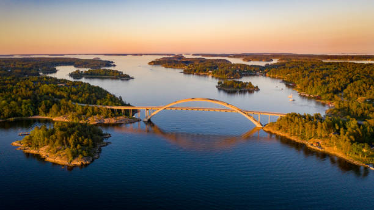

Rio Li - China
Serpenteando por entre montanhas cársticas espetaculares, o rio reflete paisagens únicas e tranquilos vilarejos flutuantes.
Lago Como - Italia
Elegância alpina às margens de um lago cristalino, vilas históricas e um cenário perfeito para o romance e gastronomia italiana .
Arquipelago de Estocolmo - Suécia
Mais de 20.000 ilhas esparramadas sobre água azul profundo, perfeitas para viagens de barco, recantos tranquilos e vilarejos pitorescos .
Parque Nacional Grand Teton - EUA
Montanhas imponentes, trilhas alpinas, vida selvagem e lagos cristalinos formam um cenário épico para fotógrafos e aventureiros.
Fiordes da Noruega - Noruega
Uma sinfonia de montanhas escarpadas e águas cristalinas — um espetáculo natural inigualável.
The Red Sea Project - Arábia Saudita
Um arquipélago futurista com resorts de luxo, vilas sobre a água inspiradas em recifes de coral e infraestrutura sustentável em meio à água cristalina do mar Vermelho .